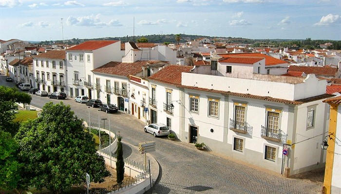

Portekiz’in kuzeyinde Douro nehrine yüksekten bakan tepelerin arasında bulunan Porto, dünyaca ünlü şaraplarıyla meşhur. Porto’nun tam kalbindeki Ribeira’da ise sadece yayalara ayrılmış bölgesiyle hem çok büyüleyici hem de canlı müziği, kafeleri, restoranları ve sokak satıcıları ile harika bir atmosfere sahip. Bölgenin en meşhur yeri ise Porto’yu Vila Nova de Gaia’ya bağlayan Ponte Dom Luis adındaki demir köprü. Şarap mahzenleri ile meşhur köprü yine görülmese gereken yerler arasında bulunuyor.
Romalılar döneminde Porto, Portus Cale olarak bilinir ve ülkenin en önemli kentidir. Daha sonra şehir bütün ülkeye ismini verdi. Porto, Douro Nehri’nin her iki kıyısında yer almaktadır. Bankalar güzel bir köprü ile bağlı. Şehrin tarihi merkezi çok özel ve canlı bir atmosfere sahiptir. Elbette burada hemen hemen her kafe veya lokali, ünlü liman şarabını tadmaktadır. Porto, her zaman öncelikle bir çalışma şehri olarak biliniyordu, ancak son yıllarda hızla popüler bir kültür merkezine dönüştü.
Romalılar döneminde Porto çevresinde büyük bir sur inşa edildi. XIV. Yüzyılda başka bir duvar eklendi. Katedral çevresinde inşa edilmiştir. Günümüzde, bu çift duvar kısmen yok olmuştur, ancak şehrin bazı bölümlerinde duvar hala iyi korunmuştur. Douro’nun kuzey kıyısında yer alan Ribeira’nın eski çeyreği bu yerlerden biridir. Bu bölge, pastel renklerle boyanmış eski evlerin bulunduğu küçük dik sokaklar, dar ve koyu renkli sokaklar, küçük iç avlu ve kahve terasında doludur. Birçok kişi hâlâ burada yaşıyor, bu yüzden Ribeira çeyreği bugün açık havada Portekiz kültür müzesine çok benziyor. Çeyrekte birçok evin cepheleri renkli azulejo fayanslarla süslenmiştir. Hatta sokak isimleriyle ilgili işaretler bu güzel kiremitlerden yapılır.
Çeyreğin ortası Praca da Ribeira Haritada göster Praça da Ribeira fotoğraf galerisi. Merkezdeki çağdaş sanat eserleri ile küçük bir rahat kare - kare Jose O Rodriguez tarafından bir küp (O Cubo) ile dekore edilmiştir. Sokakların kaotik kesişimine rağmen Ribeira bölgesinde kaybolmak neredeyse imkansızdır - aşağıya inerseniz, birçok bar, kafe, restoran ve hatıra eşyası bulabileceğiniz Cais da Ribeira Nehri kıyısına çıkacaksınız dükkanlar. Ayrıca, sete bağlanmış küçük eski gemi (barcos rabelos) da var. Daha önce, bu gemiler bir ulaşım aracı olarak kullanıldı - uzaktaki köylerden şehre liman getirdi. Günümüzde gezi amaçlı kullanılmakta ve nehir boyunca turistik gezintiler düzenlenmektedir. Futbol taraftarları kesinlikle FC Porto hayranları için kalıcı bir buluşma yeri olan Chez Lapin restoranını Haritada göster Chez Lapin fotoğraf galerisi ziyaret etmeyi unutmamalıdır. Akşamları, Douro Nehri’nin seti gece eğlenceleri hayranlarıyla doludur. www.orangesmile.com tüm hakları saklıdır.
Porto, başta ünlü liman şarabı olmak üzere dünyaca ünlüdür. Şehrin 40’dan fazla şarap imalathanesi var. Yerel halkın gerçek gururu olan liman şarabı üretiyorlar. Üreticilerin çoğunluğu ilçede Ribeira bölgesinin karşısında yer almaktadır. Douro Nehri’nin diğer kıyısında bulunur. Örneğin, Calem limanı yapan en ünlü firmalardan birinin mahzenine orada bir gezi düzenlerseniz, tarih ve liman yapma süreci hakkında çok şey öğreneceksiniz. Elbette, tüm ziyaretçiler, bazıları 60.000 litre şarap tutabilen büyük ahşap variller boyunca yürüyüşe çıkarılacak. Yaklaşık 20 dakika süren gezi, şarap tadımı ile en iyi bölümüyle tamamlanacak